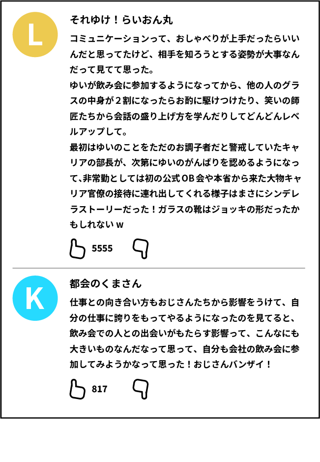

とりあえず ウーロン茶
2026 2時間55分
ストーリー
仕事とプライベートはきっちり分けたい。 職場の人とは仕事の付き合いで十分。
そう思っていたゆいが転職した先は国を支えるお堅い役場！ ――のはずだった。
終業のチャイムと同時に、「喉が渇いた～」とこちらをチラリ。 ニカッと笑った次の瞬間、手首のスナップで夜の街へ誘う――。 そこは、飲み会モンスターたちの巣窟だった……！
学生時代は狂気のピエロ。笑いは取れても教室の隅にひとり。 会話はいつもドッジボール。
「このままじゃ、一生独身かもしれない！」
そう危機感を抱いたゆいは、コミュニケーション能力を身につけるべく、 ジョッキ音が鳴り響く夜の街へ、武者修行の旅に出る。
「俺は亭主関白だ！ シャー！」と威嚇するスネークおじ。 「東大ではこんなの習ってないぞ！ お前はクビだ！」と叫ぶ断罪キング。 そして、霞が関より参りし全長2mのキャリア官僚。 次々と立ちはだかる強敵たち。
武器はウーロン茶一杯。
氷が溶けて少しずつ増えていく、その一杯だけを頼りに、 果たして最後まで戦い抜くことができるのか！？
乾杯コール沸き起こる、笑いあり、涙あり（？）の 今世紀最大飲み会エンターテインメント、開幕。
comment
